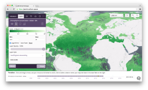

A web-based GIS tool for visualisation and analysis of geospatial data
This portal is a demonstration project for the UK Space Agency, and provides access to long time series climate data records.
jasmin.eofrom.space - running at JASMIN/CEMS
This portal provides Earth observation data complemented by model output for use in MSFD monitoring, ecosystem service estimation and natural capital capacity valuation in UK waters.
The Water Cycle Integrator portal provides model simulated, earth observation and in-situ data for global water resources.
The visual portal is a demonstration instance of the portal.
The Ocean Colour CCI web GIS portal allows you to view, manipulate and analyse data.
The Marine Operation Ecology data portal provides model simulated ecosystem data for European Regional Seas.
The PML Modelling group portal showcases the outputs from the modelling group within PML.
portal.ecosystem-modelling.pml.ac.uk